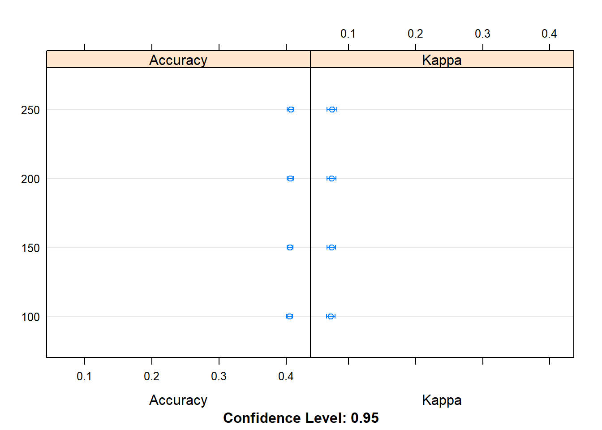
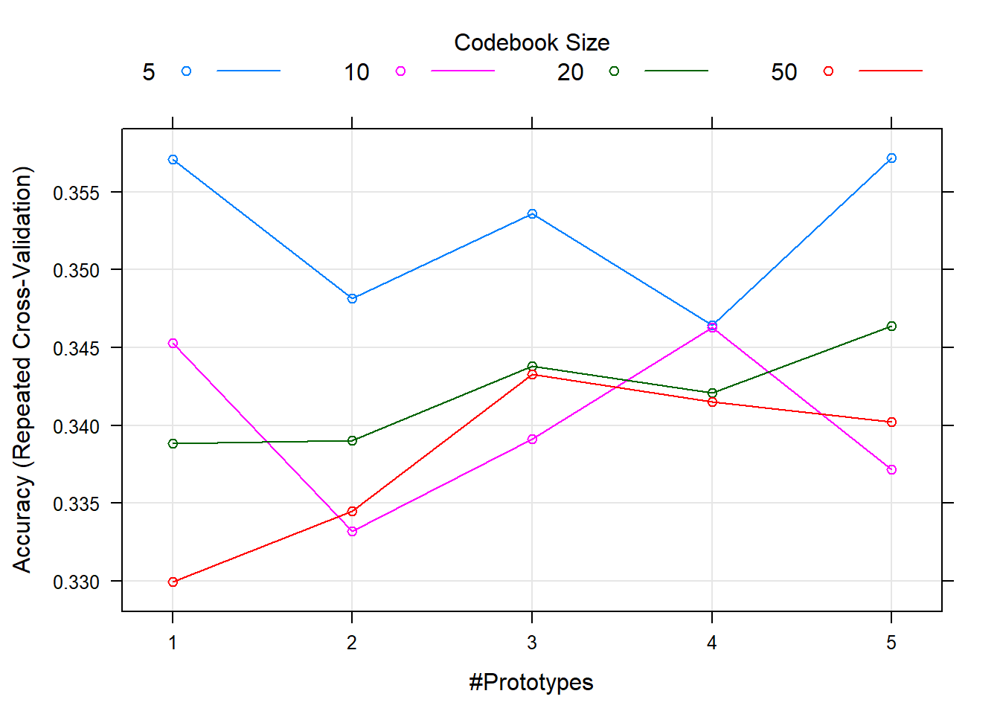
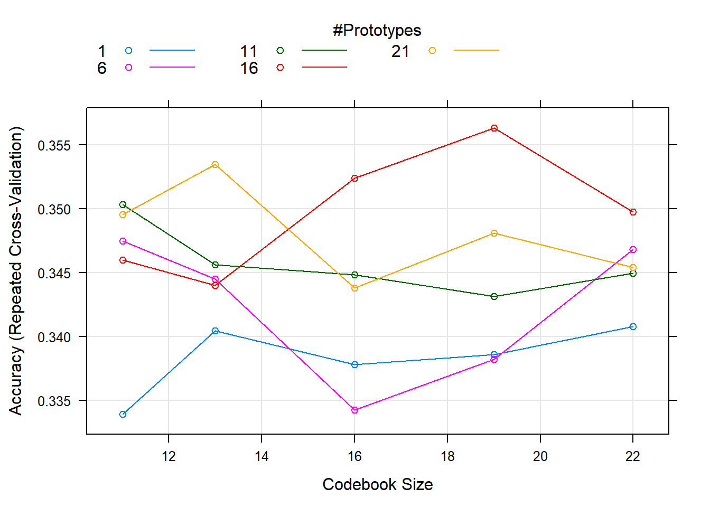
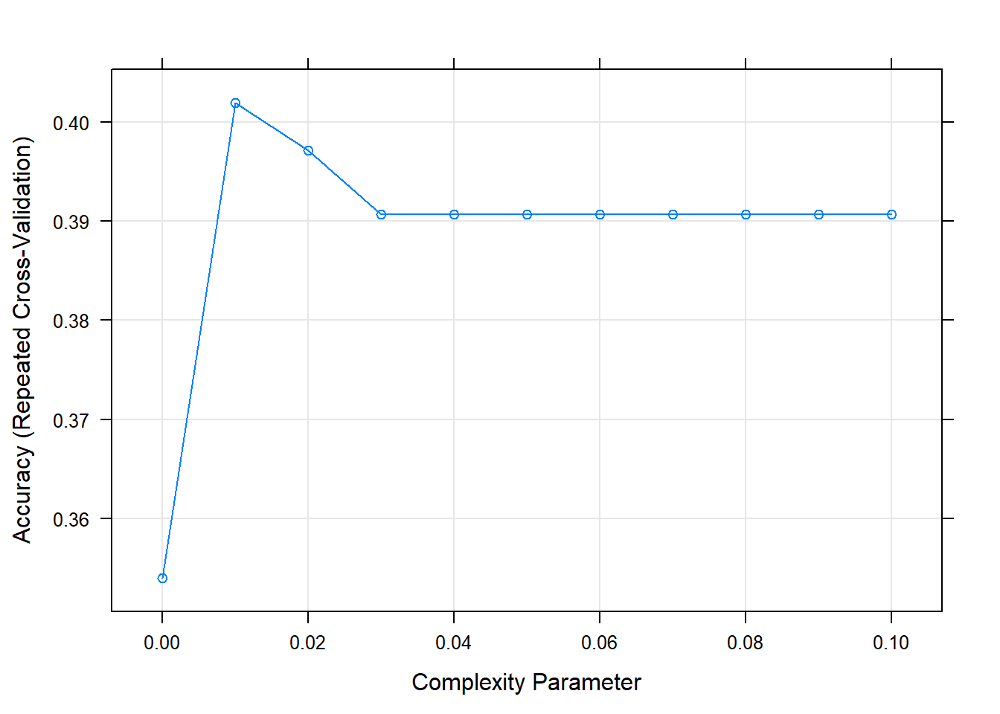
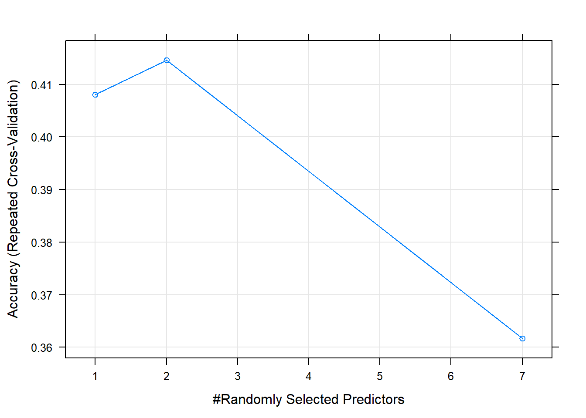

Model evaluation
** Model Evaluation **
This data contains transaction history for customers who bought a particular product. For each customer_ID, multiple data points are simulated to capture the purchase behavior. The data is originally set for solving multiple classes with four possible products of insurance industry.
In big data, diviser dataset en 3 : - training data : to train de model - testing data : see performance of the model on new data - validation data :
In general, we can classify the purpose of model performance and evaluation focus into three buckets : - Accuracy: The accuracy of a model reflects the proportion of right predictions-in a continuous case, its minimum residual, and in discrete, the correct class prediction - Gains: The gains statistic compares the model output with the result that we get without using a model - Accreditation: The model accreditation reflects the credibility of a model for actual use Population stability index is one of the measures to ensure accreditation before using the model
Population stability index
Population stability index is a measure to ascertain if the model training dataset is similar to the data where the model is used, or the population is stable with respect to the features used in the model. The index value varies from 0 to 1, with high values indicating greater similarity between the predictors in the two datasets. A stable population confirms the use of model for prediction.
Check stability using two sample Kolmogorov-Smirnov test. Essentially, the KS statistic will get the highest point of difference between the empirical distribution comparison of two samples and, if that is too high, we say the two samples are different. In terms of population stability, it says your model performance can’t be measured on new samples and the underlying sample is not from the same distribution on which the model was trained.
Si continue : KS test Si discret : PSI - A PSI < 0.1 indicates a minimal change in the population. - A PSI 0.1 to 0.2 indicates changes that require further investigation. - A PSI > 0.2 indicates a significant change in the population
Model Evaluation for Continuous Output
The distribution of dependent variables is an important consideration in choosing the methods for evaluating the models.
- Mean absolute error : $ MAE = 1/n |f_t-y_t=1/n| |e_i|$
- Root Mean Square error RMSE mieux pour interpretation :exemple The predicted and actual value is in dollars. Then you square the error, so the dimension becomes dollar squared. So, we square root that to bring back the dimension to dollars and can now interpret RMSE is dollar terms
- R2 (see regression chapter): pourcentage de la variantion de la variable d?pendante qui est expliqu? par les regresseurs
library(data.table)
Data_Purchase <-fread("C:/Users/007/Desktop/Data science with R/R/Dataset/Chapter 7/Purchase Prediction Dataset.csv",header=T,verbose =FALSE, showProgress =FALSE)
#Pulling out only the relevant data to this chapter
Data_Purchase <-Data_Purchase[,c("CUSTOMER_ID","ProductChoice","MembershipPoints", "IncomeClass","CustomerPropensity","LastPurchaseDuration")]
Data_Purchase <-na.omit(Data_Purchase)
Data_Purchase$CUSTOMER_ID <-as.character(Data_Purchase$CUSTOMER_ID)
Data_House_Price <-fread("C:/Users/007/Desktop/Data science with R/R/Dataset/Chapter 7/House Sale Price Dataset.csv",header=T,verbose =FALSE, showProgress =FALSE)
Data_House_Price <-na.omit(Data_House_Price)
Data_House_Price$HOUSE_ID <-as.character(Data_House_Price$HOUSE_ID)
### population stability index
#Create set 1 and set 2 : First 2/3 as set 1 and remaining 1/3 as set 2
set_1 <-Data_House_Price[1:floor(nrow(Data_House_Price)*(2/3)),]$HousePrice
set_2 <-Data_House_Price[floor(nrow(Data_House_Price)*(2/3) +1):nrow(Data_House_Price),]$HousePrice
# 1 KS TEST
#Defining a function to give ks test result and ECDF plots on log scale
library(rgr)## Warning: package 'rgr' was built under R version 3.3.3## Loading required package: MASS## Loading required package: fastICA## Warning: package 'fastICA' was built under R version 3.3.3ks_test <-function (xx1, xx2, xlab ="House Price",
x1lab=deparse(substitute(xx1)),
x2lab =deparse(substitute(xx2)),
ylab ="Empirical Cumulative Distribution Function",
log =TRUE, main ="Empirical EDF Plots - K-S Test",
pch1 =3, col1 =2, pch2 =4, col2 =4, cex =0.8,
cexp =0.9, ...)
{
temp.x <-remove.na(xx1)
x1 <-sort(temp.x$x[1:temp.x$n])
nx1 <-temp.x$n
y1 <-((1:nx1) -0.5)/nx1
temp.x <-remove.na(xx2)
x2 <-sort(temp.x$x[1:temp.x$n])
nx2 <-temp.x$n
y2 <-((1:nx2) -0.5)/nx2
xlim <-range(c(x1, x2))
if (log) {logx <- "x"
if (xlim[1] <=0)
stop("\n Values cannot be .le. zero for a log plot\n")
} else logx <- ""
plot(x1, y1, log = logx, xlim = xlim, xlab = xlab,
ylab = ylab,main = main, type ="n", ...)
points(x1, y1, pch = pch1, col = col1, cex = cexp)
points(x2, y2, pch = pch2, col = col2, cex = cexp)
temp <-ks.test(x1, x2)
print(temp)
}
ks_test(set_1,set_2)## Warning in ks.test(x1, x2): p-value will be approximate in the presence of
## ties
##
## Two-sample Kolmogorov-Smirnov test
##
## data: x1 and x2
## D = 0.050684, p-value = 0.5744
## alternative hypothesis: two-sided# H0 : deux echantillons proviennent de la meme population
#Manipulate the set 2
set_2_new <-set_2*exp(set_2/100000)
# Now do the k-s test again
ks_test(set_1,set_2_new)## Warning in ks.test(x1, x2): p-value will be approximate in the presence of
## ties
##
## Two-sample Kolmogorov-Smirnov test
##
## data: x1 and x2
## D = 0.79957, p-value < 2.2e-16
## alternative hypothesis: two-sided# 2 PSI
set_1 <-Data_Purchase[1:floor(nrow(Data_Purchase)*(2/3)),]$ProductChoice
set_2 <-Data_Purchase[floor(nrow(Data_Purchase)*(2/3) +1):nrow(Data_Purchase),]$ProductChoice
#PSI=Summation((n1i/N1)(n2i/N2))ln((n1i/N1)/(n2i/N2))
temp1 <-(table(set_1)/length(set_1) -table(set_2)/length(set_2))
temp2 <-log((table(set_1)/length(set_1))*(table(set_2)/length(set_2)))
psi <-abs(sum(temp1*temp2))
psi## [1] 0.002147654### Continuous output
linear_reg_model <-lm(HousePrice ~StoreArea +StreetHouseFront +BasementArea +LawnArea +Rating +SaleType ,
data=Data_House_Price[1:floor(nrow(Data_House_Price)*(2/3)),])
test <-Data_House_Price[floor(nrow(Data_House_Price)*(2/3) +1):nrow(Data_House_Price),]
## 1. MAE
predicted_lm <-predict(linear_reg_model,test, type="response")
actual_predicted <-as.data.frame(cbind(as.numeric(test$HOUSE_ID),as.numeric(test$HousePrice),as.numeric(predicted_lm)))
names(actual_predicted) <-c("HOUSE_ID","Actual","Predicted")
#Find the absolute residual and then take mean of that
library(ggplot2)
#Plot Actual vs Predicted values for Test Cases
ggplot(actual_predicted,aes(x = actual_predicted$HOUSE_ID,color=Series)) +
geom_line(data = actual_predicted, aes(x = actual_predicted$HOUSE_ID,
y =Actual, color ="Actual")) +
geom_line(data = actual_predicted, aes(x = actual_predicted$HOUSE_ID, y =
Predicted, color ="Predicted")) +xlab('HOUSE_ID') +ylab('House Sale Price')
actual_predicted <-na.omit(actual_predicted)
mae <-sum(abs(actual_predicted$Actual -actual_predicted$Predicted))/nrow(actual_predicted)
mae## [1] 29570.3## 2. RMSE
rmse <-sqrt(sum((actual_predicted$Actual-actual_predicted$Predicted)^2)/nrow(actual_predicted))
rmse## [1] 44459.42# error moyen de 44,459 dollarsModel Evaluation for Discrete Output
- Classification matrix
| Predicted | |||
|---|---|---|---|
| 0 | 1 | ||
| Actual | 0 | TP | FN |
| 1 | FP | TN |
Classification Rate = (TP + TN) / Total case
Sensitivity: The probability that the test will indicate the True class as True among actual true. Also called True Positive Rate (TPR = TP/(TP+FN))
Specificity: Probability that the test will indicate that the False class and False are among an actual False. Also called the True Negative Rate (TNR = TN/(TN+FP))
For a good model, we try to maximize both TPR and TNR, and the Receiver Operating Characteristic (ROC) helps in this process. Receiver Operating Curve is a plot between sensitivity and (1- specificity), and the highest point on this curve provide the cutoff which maximizes our classification rate.
- Area Under ROC Curve = graphical representation of the performance of a binary classifier as the threshold or cutoff to classify changes. For a multiclassifier model, it’s sometime better to rebuild the multi-class model as a binary model (one and rest).
Data_Purchase<-na.omit(Data_Purchase)
#Sample equal sizes from Data_Purchase to reduce class imbalance issue
library(splitstackshape)
Data_Purchase_Model<-stratified(Data_Purchase,group=c("ProductChoice"),size=10000,replace=FALSE)
table(Data_Purchase_Model$ProductChoice)##
## 1 2 3 4
## 10000 10000 10000 10000set.seed(917)
train <-Data_Purchase_Model[sample(nrow(Data_Purchase_Model),size=nrow(Data_Purchase_Model)*(0.7), replace =TRUE, prob =NULL),]
test <-Data_Purchase_Model[!(Data_Purchase_Model$CUSTOMER_ID%in%train$CUSTOMER_ID),]
#Fit a multinomial logistic model
library(nnet)
mnl_model <-multinom (ProductChoice ~MembershipPoints +IncomeClass+CustomerPropensity +LastPurchaseDuration, data = train)## # weights: 68 (48 variable)
## initial value 38816.242111
## iter 10 value 37662.429265
## iter 20 value 37533.072219
## iter 30 value 37286.823817
## iter 40 value 37204.927564
## iter 50 value 37161.299915
## iter 60 value 37159.894665
## final value 37159.892712
## converged#Predict the probabilities
predicted_test <-as.data.frame(predict(mnl_model, newdata = test,
type="probs"))
# Do the prediction based in highest probability
test_result <-apply(predicted_test,1,which.max)
table(test_result)## test_result
## 1 2 3 4
## 7907 2234 4396 5465# Combine to get predicted and actuals at one place
result <-as.data.frame(cbind(test$ProductChoice,test_result))
colnames(result) <-c("Actual Class", "Predicted Class")
#Create the classification matrix
cmat <-as.matrix(table(Actual = result$`Actual Class`, Predicted =
result$`Predicted Class`))
n <-sum(cmat) ;
cat("Number of Cases ", n);## Number of Cases 20002nclass <-nrow(cmat);
cat("Number of classes ", nclass);## Number of classes 4correct_class <-diag(cmat);
cat("Number of Correct Classification ", correct_class);## Number of Correct Classification 2863 643 1542 1906rowsums <-apply(cmat, 1, sum);
cat("Number of Instances per class ", rowsums);## Number of Instances per class 4998 4995 5035 4974colsums <-apply(cmat, 2, sum);
cat("Number of Instances per predicted class ", colsums);## Number of Instances per predicted class 7907 2234 4396 5465actual_dist <-rowsums /n;
cat("Distribution of actuals ", actual_dist);## Distribution of actuals 0.249875 0.249725 0.2517248 0.2486751predict_dist <-colsums /n;
cat("Distribution of predicted ", predict_dist);## Distribution of predicted 0.3953105 0.1116888 0.219778 0.2732227print(cmat)## Predicted
## Actual 1 2 3 4
## 1 2863 605 699 831
## 2 2140 643 926 1286
## 3 1542 509 1542 1442
## 4 1362 477 1229 1906classification_rate <-sum(correct_class)/n
print(classification_rate)## [1] 0.3476652# to low
### Sensitivity and specificity
# for class 1
Actual_Class <-ifelse(result$`Actual Class` ==1,"One","Rest");
Predicted_Class <-ifelse(result$`Predicted Class` ==1, "One", "Rest");
ss_analysis <-as.data.frame(cbind(Actual_Class,Predicted_Class));
cmat_ProductChoice1 <-as.matrix(table(Actual = ss_analysis$Actual_Class, Predicted = ss_analysis$Predicted_Class));
print(cmat_ProductChoice1)## Predicted
## Actual One Rest
## One 2863 2135
## Rest 5044 9960classification_rate_ProductChoice1 <-sum(diag(cmat_ProductChoice1))/n;
classification_rate_ProductChoice1## [1] 0.6410859#Calculate TPR and TNR
TPR <-cmat_ProductChoice1[1,1]/(cmat_ProductChoice1[1,1] +cmat_ProductChoice1[1,2]);
cat(" Sensitivity or True Positive Rate is ", TPR);## Sensitivity or True Positive Rate is 0.5728291TNR <-cmat_ProductChoice1[2,2]/(cmat_ProductChoice1[2,1] +cmat_ProductChoice1[2,2])
cat(" Specificity or True Negative Rate is ", TNR);## Specificity or True Negative Rate is 0.663823### ROC and AUC
# rebuilt model in binary class model
# create a the variable Choice_binom as above definition
train$ProductChoice_binom <-ifelse(train$ProductChoice ==1,1,0);
test$ProductChoice_binom <-ifelse(test$ProductChoice ==1,1,0);
# Fit a binary logistic model on the modified dependent variable, ProductChoice_binom.
glm_ProductChoice_binom <-glm( ProductChoice_binom ~MembershipPoints +IncomeClass +CustomerPropensity +LastPurchaseDuration, data=train,
family=binomial(link="logit"))
# Now create the performance dataset to create AUC curve
library(ROCR)## Warning: package 'ROCR' was built under R version 3.3.3## Loading required package: gplots## Warning: package 'gplots' was built under R version 3.3.3##
## Attaching package: 'gplots'## The following object is masked from 'package:stats':
##
## lowesstest_binom <-predict(glm_ProductChoice_binom,newdata=test, type ="response")
pred <-prediction(test_binom, test$ProductChoice_binom)
perf <-performance(pred,"tpr","fpr")
# Calculating
auc <-unlist(slot(performance(pred,"auc"),"y.values"))
cat("The Area Under ROC curve for this model is ",auc)## The Area Under ROC curve for this model is 0.6645076# Plotting the ROCcurve
library(ggplot2)
library(plotROC)## Warning: package 'plotROC' was built under R version 3.3.3debug <-as.data.frame(cbind(test_binom,test$ProductChoice_binom))
ggplot(debug, aes(d = V2, m = test_binom)) +geom_roc()
Probabilistic techniques
In probabilistic techniques, we will be simulating and sampling subsets to get a robust and stable model.
K-Fold Cross Validation
Steps to execute k-fold cross validation include: - Step 1: Divide the dataset into k subsets. - Step 2: Train a model on k-1 subsets. - Step 3: Test the model on remaining one subset and calculate the error. - Step 4: Repeat Steps 1-3 until all subsets are used exactly once for testing. - Step 5: Average out the errors by this scenario simulation exercise to get the crossvalidation error.
This method ensures that every data point gets to be in a test set exactly once, and gets to be in a training set k-1 times. The variance of the resulting estimate is reduced as k is increased.
Bootstrap sampling
Based on random samples from our data we will try to estimate the model and see if we can reduce the error and get the high-performance model. One important thing to note is that the bootstrap samples run again and again for model estimation, but cross validation main exclusivity of subsets in each run
library(caret)
library(randomForest)
set.seed(917)
train <-Data_House_Price[1:floor(nrow(Data_House_Price)*(2/3)),.(HousePrice ,StoreArea,StreetHouseFront, BasementArea,LawnArea,StreetHouseFront,LawnArea ,Rating,SaleType)]
test <-Data_House_Price[floor(nrow(Data_House_Price)*(2/3) +1):nrow(Data_House_Price), .(HousePrice,StoreArea, StreetHouseFront,BasementArea,LawnArea,StreetHouseFront,LawnArea,Rating,SaleType)]
# Omitting the NA from dataset
train <-na.omit(train)
test <-na.omit(test)
## K-Fold Cross Validation
#Create the k subsets, let's take k as 10 (i.e., 10-fold cross validation)
k_10_fold <-trainControl(method ="repeatedcv", number =10, savePredictions=TRUE)
# Fit the model on folds and use rmse as metric to fit the model
# model_fitted <-train(HousePrice ~StoreArea +StreetHouseFront +BasementArea +LawnArea
# +StreetHouseFront +LawnArea +Rating +SaleType, data=train,
# family= identity,trControl = k_10_fold, tuneLength =5)
#
# saveRDS(model_fitted, "modkfold.rds")
mod <- readRDS("modkfold.rds")
mod## Random Forest
##
## 712 samples
## 6 predictor
##
## No pre-processing
## Resampling: Cross-Validated (10 fold, repeated 1 times)
## Summary of sample sizes: 641, 639, 640, 641, 642, 639, ...
## Resampling results across tuning parameters:
##
## mtry RMSE Rsquared MAE
## 2 40193.64 0.7841204 26207.36
## 4 37898.04 0.7933974 24781.73
## 6 38330.78 0.7877057 25133.98
## 8 38503.97 0.7857258 25372.41
## 10 38392.95 0.7874297 25447.08
##
## RMSE was used to select the optimal model using the smallest value.
## The final value used for the model was mtry = 4.# You can see from the summary that the model selected by cross-validation has a higher R2 than the one we created previously
## Bootstrap sampling
boot_10s <-trainControl(method ="boot", number =10, savePredictions =TRUE)
#Fit the model on bootstraps and use rmse as metric to fit the model
# model_fitted <-train(HousePrice ~StoreArea +StreetHouseFront +BasementArea +LawnArea
# +StreetHouseFront +LawnArea +Rating +SaleType, data=train,
# family= identity,trControl = boot_10s, tuneLength =5)
#
# saveRDS(model_fitted, "modboost.rds")
mod2 <- readRDS("modboost.rds")
mod2## Random Forest
##
## 712 samples
## 6 predictor
##
## No pre-processing
## Resampling: Bootstrapped (10 reps)
## Summary of sample sizes: 712, 712, 712, 712, 712, 712, ...
## Resampling results across tuning parameters:
##
## mtry RMSE Rsquared MAE
## 2 41869.19 0.7660360 26810.45
## 4 39342.61 0.7807055 25425.07
## 6 39369.38 0.7802326 25599.97
## 8 39626.34 0.7774581 25879.28
## 10 39763.28 0.7765838 26115.92
##
## RMSE was used to select the optimal model using the smallest value.
## The final value used for the model was mtry = 4.The Kappa Error Metric
Kappa or cohen’s kappa coefficient is a statistic that measures the relationship between observed accuracy and expected accuracy. In the machine learning world, the Kappa is adopted to compare a pure random chance with a model. This type of metric is very effective in cases of imbalanced classification \[ \kappa = \frac{p_o - p_e}{1- p_e}= 1- \frac{1-p_o}{1-p_e} \] Where \(p_0\) is the relative observed aggreement among two approaches and \(p_e\) is the hypothetical probabilité of a chance overlap, using the observed data to calculate the probabilities of each approach randomly selecting each category. If the approaches are in complete agreement then κ = 1.
From an interpretation point of view, the following guidelines can be used: - Poor agreement when kappa is 0.20 or less - Fair agreement when kappa is 0.20 to 0.40 - Moderate agreement when kappa is 0.40 to 0.60 - Good agreement when kappa is 0.60 to 0.80 - Very good agreement when kappa is 0.80 to 1.00
library(caret)
library(mlbench)## Warning: package 'mlbench' was built under R version 3.3.3set.seed(917)
# Below we randomly sample 5000 cases to make the computation faster.
train_kappa <-Data_Purchase_Model[sample(nrow(Data_Purchase_Model),size=5000, replace =TRUE, prob =NULL),]
# train() function confuses between numeric levels, hence convert the dependent into text i.e., 1->A, 2->B, 3-> C and 4->D
train_kappa$ProductChoice_multi <-ifelse(train_kappa$ProductChoice ==1,"A",
ifelse(train_kappa$ProductChoice ==2, "B",
ifelse(train_kappa$ProductChoice==3,"C","D")));
train_kappa <-na.omit(train_kappa)
# Set the experiment
cntrl <-trainControl(method="cv", number=5, classProbs =TRUE)
table(train_kappa$ProductChoice_multi)##
## A B C D
## 1271 1244 1260 1225colnames(train_kappa) <-make.names(names(train_kappa), unique =TRUE, allow_ =TRUE)
train_kappa$ProductChoice_multi <-as.factor(train_kappa$ProductChoice_multi)
train_kappa$CustomerPropensity <-as.factor(train_kappa$CustomerPropensity)
train_kappa$LastPurchaseDuration <-as.factor(train_kappa$LastPurchaseDuration)
# Random forest for example
# model_fitted <-train(ProductChoice_multi ~CustomerPropensity +LastPurchaseDuration,
# data=train_kappa, method="rf",
# metric="Accuracy",trControl=cntrl)
#
# saveRDS(model_fitted, "model_fitted.rds")
mod3 <- readRDS("model_fitted.rds")
mod3## Random Forest
##
## 5000 samples
## 2 predictor
## 4 classes: 'A', 'B', 'C', 'D'
##
## No pre-processing
## Resampling: Cross-Validated (5 fold)
## Summary of sample sizes: 4000, 4001, 3999, 4000, 4000
## Resampling results across tuning parameters:
##
## mtry Accuracy Kappa
## 2 0.3346027 0.1107188
## 10 0.3376021 0.1158245
## 19 0.3364009 0.1141272
##
## Accuracy was used to select the optimal model using the largest value.
## The final value used for the model was mtry = 10.# Accuracy was used to select the optimal model using the largest value
pred <-predict(mod3, newdata=train_kappa)
confusionMatrix(data=pred, train_kappa$ProductChoice_multi)## Confusion Matrix and Statistics
##
## Reference
## Prediction A B C D
## A 793 564 431 436
## B 201 235 191 190
## C 133 204 280 261
## D 144 241 358 338
##
## Overall Statistics
##
## Accuracy : 0.3292
## 95% CI : (0.3162, 0.3424)
## No Information Rate : 0.2542
## P-Value [Acc > NIR] : < 2.2e-16
##
## Kappa : 0.1045
## Mcnemar's Test P-Value : < 2.2e-16
##
## Statistics by Class:
##
## Class: A Class: B Class: C Class: D
## Sensitivity 0.6239 0.1889 0.2222 0.2759
## Specificity 0.6163 0.8450 0.8401 0.8032
## Pos Pred Value 0.3566 0.2876 0.3189 0.3127
## Neg Pred Value 0.8278 0.7588 0.7623 0.7737
## Prevalence 0.2542 0.2488 0.2520 0.2450
## Detection Rate 0.1586 0.0470 0.0560 0.0676
## Detection Prevalence 0.4448 0.1634 0.1756 0.2162
## Balanced Accuracy 0.6201 0.5170 0.5312 0.5395# Our model results differ from the random model. Now, there can be two possibilities, the our model performing worse than the random model or it performing exceptionally well. Looking at the accuracy measure, 35.4% looks like our model did not do a good job in classificationModel Performance Improvement
Feature selection plays an important role in modeling development process. The higher levels properties of a model, e.g., complexity and speed of learning, also impact the model performance. These high-level parameters are known as hyperparameter
There are 2 way to improve the model - work on data : Add more features and improve the quality of data - work on model : Optimize the hyper-parameters
Machine learning and statistical modeling
The way we treat the estimation problem is what differentiates machine learning from statistical modeling. Machine learning is an algorithm that can learn this relationship without relying on any rule-bases programming. Statistical modeling will estimate the relationship based on formal quantification from statistical inferences (confidence interval, hypothesis testing, distributions, etc.).
Overview of Caret package
There are two of the most important function/tools i - The trainControl() function is like a wrapper that defines the rule for model training and the conditions around how sampling and grid search is to be done. - train() function is very powerful function that can support 230 types of models available in the Caret package - Model evaluation, using cross validation, resampling, and other conventional metrics. It also can be used to measure the effect of tuning parameters in performance. - Model selection by choosing the best model based on optimal parameters, so multiple metrics can be calculated to choose the final model. - Model estimation using any of the 230 types of models listed in the train model list with default parameters or tuned ones.
Introduction to hyper-parameters
the hyper-parameters are not directly learned from the data and are actually very influential in model performance. Hyper-parameters explain the “higherlevel” properties of the model such as its complexity, how fast it should learn, and how much depth it should go into. Select by Iterative optimization
Generally, we can divide the hyperparameters into four decision points before we train the model with data: - Model type : Decide what type of model you choose in machine learning, like feed-forward or recurrent neural network, support vector machine, linear regression, etc. - Architecture : Once you decide the model type, you give inputs on what the boundaries of the model learning process are, i.e., number of hidden layers, number of nodes per hidden layer, batch normalization and pooling layer, etc. - Training-parameter : Once you decide on the model type and architecture, you decide how the model should learn, i.e., learning and momentum rate, batch size, etc. - Model parameter : Once you provide these inputs, the model training process starts and the model parameters are estimated, such as weights and biases in a neural networ
Hyper-parameter tuning illustrations
Most of these parameter tuning/optimization techniques are search problems in high dimensional space. The searching is done on a iterative and guided basis. Several methods for choosing a set of hyper-paramaters : - Manual search: Create a set of parameters using best judgment/ experience and test them on the model. - Manual grid search : Create an equally spaced grid or custom grid of a combination of hyper-parameters. Evaluate the mode on each grid point. - Automatic grid search: Let the program decide a grid and do the search in that space for the best hyper-parameters - Optimal search: In this method we generally don’t freeze the grid beforehand, but allow the machine to expand the grid as and when needed. - Random search: In general, choosing some random points in the hyper-parameter search space works faster and better but It might not always give you the best/optimal set of hyper-parameters. - Custom search: Users can define their own functions and guide the algorithm on how to find the best set of hyper-parameters.
# Two random forest with différent number of tree (ntree =20 and ntree=50)
library(data.table)
library(caret)
library(randomForest)
library(mlbench)
library(class)
set.seed(917);
# Load Dataset
Purchase_Data <-read.csv("C:/Users/007/Desktop/Data science with R/R/Dataset/Chapter 8/Purchase Prediction Dataset.csv",header=TRUE)
data <-na.omit(Purchase_Data)
Data <-data[sample(nrow(data),size=10000),]
# ntree =20
fit_20 <-randomForest(factor(ProductChoice) ~MembershipPoints +CustomerAge +PurchaseTenure +CustomerPropensity +LastPurchaseDuration, data=Data,
importance=TRUE, ntree=20)
print(fit_20)##
## Call:
## randomForest(formula = factor(ProductChoice) ~ MembershipPoints + CustomerAge + PurchaseTenure + CustomerPropensity + LastPurchaseDuration, data = Data, importance = TRUE, ntree = 20)
## Type of random forest: classification
## Number of trees: 20
## No. of variables tried at each split: 2
##
## OOB estimate of error rate: 64.27%
## Confusion matrix:
## 1 2 3 4 class.error
## 1 550 1035 495 104 0.7481685
## 2 730 1927 1051 199 0.5067827
## 3 449 1300 1005 165 0.6557040
## 4 149 450 300 91 0.9080808# ntree = 50
fit_50 <-randomForest(factor(ProductChoice) ~MembershipPoints +CustomerAge
+PurchaseTenure +CustomerPropensity +LastPurchaseDuration, data=Data,
importance=TRUE, ntree=50)
print(fit_50)##
## Call:
## randomForest(formula = factor(ProductChoice) ~ MembershipPoints + CustomerAge + PurchaseTenure + CustomerPropensity + LastPurchaseDuration, data = Data, importance = TRUE, ntree = 50)
## Type of random forest: classification
## Number of trees: 50
## No. of variables tried at each split: 2
##
## OOB estimate of error rate: 63.35%
## Confusion matrix:
## 1 2 3 4 class.error
## 1 502 1153 472 57 0.7701465
## 2 712 2065 994 136 0.4714615
## 3 427 1329 1029 134 0.6474820
## 4 147 467 307 69 0.9303030# result increase
# now : what is the most cost- and time-effective way to find an optimal value of the hyperparameters.
### Manual Search ###
dataset <-Data
metric <- "Accuracy"
# method = "reapeatedcv" => repeated cross validation
# search = grid => search in the grid defined by tunegrid.
trainControl <-trainControl(method="repeatedcv", number=10, repeats=3, search="grid")
tunegrid <-expand.grid(.mtry=c(sqrt(ncol(dataset)-2)))
modellist <-list()
# train a random forest (rf) number de tree define with a loop
# for (ntree in c(100, 150, 200, 250)) {
# set.seed(917);
# fit <-train(factor(ProductChoice) ~MembershipPoints +CustomerAge
# +PurchaseTenure +CustomerPropensity
# +LastPurchaseDuration, data=dataset,method="rf",
# metric=metric, tuneGrid=tunegrid,
# trControl=trainControl,ntree=ntree)
# key <-toString(ntree)
# modellist[[key]] <-fit
# }
#
# saveRDS(modellist, "modellist.rds")
modellist <- readRDS("modellist.rds")
# compare results by resampling
results <-resamples(modellist)
#Summary of Results
summary(results)##
## Call:
## summary.resamples(object = results)
##
## Models: 100, 150, 200, 250
## Number of resamples: 30
##
## Accuracy
## Min. 1st Qu. Median Mean 3rd Qu. Max. NA's
## 100 0.384 0.3955 0.4043 0.4049 0.4131 0.432 0
## 150 0.388 0.3982 0.4038 0.4058 0.4104 0.434 0
## 200 0.385 0.3990 0.4035 0.4061 0.4138 0.432 0
## 250 0.386 0.3990 0.4063 0.4068 0.4150 0.439 0
##
## Kappa
## Min. 1st Qu. Median Mean 3rd Qu. Max. NA's
## 100 0.04077 0.06138 0.07422 0.07373 0.08517 0.1097 0
## 150 0.04656 0.06478 0.07175 0.07447 0.08016 0.1113 0
## 200 0.04259 0.06325 0.07106 0.07467 0.08731 0.1097 0
## 250 0.04036 0.06375 0.07533 0.07522 0.08866 0.1186 0#Dot Plot of results : Performance plot accuracy metrics
dotplot(results)
# accuracy dont vary much : our search is not compréhensive or model learn most of the feature in less than 100 three random forest
### Manual grid Search ###
###########################
# Model type : Learning Vector Quantization (LVQ)
seed <-917;
dataset <-Data
# prepare training scheme
control <-trainControl(method="repeatedcv", number=10, repeats=3)
# design the parameter tuning grid
grid <-expand.grid(size=c(5,10,20,50), k=c(1,2,3,4,5))
# train the model
# model <-train(factor(ProductChoice) ~MembershipPoints +CustomerAge +PurchaseTenure +CustomerPropensity
# +LastPurchaseDuration, data=dataset,
# method="lvq", trControl=control, tuneGrid=grid)
#
# saveRDS(model, "model.rds")
model <- readRDS("model.rds")
print(model)## Learning Vector Quantization
##
## 10000 samples
## 5 predictor
## 4 classes: '1', '2', '3', '4'
##
## No pre-processing
## Resampling: Cross-Validated (10 fold, repeated 3 times)
## Summary of sample sizes: 9000, 9000, 9000, 9000, 9001, 9000, ...
## Resampling results across tuning parameters:
##
## size k Accuracy Kappa
## 5 1 0.3571024 0.03094622
## 5 2 0.3481303 0.03133923
## 5 3 0.3535952 0.02395108
## 5 4 0.3464372 0.02442993
## 5 5 0.3571660 0.03550488
## 10 1 0.3453044 0.03604403
## 10 2 0.3331959 0.02653729
## 10 3 0.3391057 0.03592784
## 10 4 0.3462999 0.03052423
## 10 5 0.3371683 0.03301055
## 20 1 0.3388318 0.03454778
## 20 2 0.3390346 0.03279020
## 20 3 0.3438037 0.04492403
## 20 4 0.3420689 0.04431798
## 20 5 0.3463657 0.04401897
## 50 1 0.3299323 0.02951925
## 50 2 0.3344656 0.03450812
## 50 3 0.3432604 0.04246643
## 50 4 0.3415313 0.04255682
## 50 5 0.3402301 0.04210708
##
## Accuracy was used to select the optimal model using the largest value.
## The final values used for the model were size = 5 and k = 5.# plot the effect of parameters on accuracy
plot(model)
# best model : top line peaking
### Automatic Grid Search ###
#############################
# Model type : Learning Vector Quantization (LVQ)
set.seed(917);
dataset <-Data
# in trainControl() : search method being default, i.e., an automatic grid search.
# prepare training scheme
control <-trainControl(method="repeatedcv", number=10, repeats=3)
# train the model
# model2 <-train(factor(ProductChoice) ~MembershipPoints +CustomerAge +
# PurchaseTenure + CustomerPropensity +LastPurchaseDuration,
# data=dataset, method="lvq", trControl=control, tuneLength=5)
#
# saveRDS(model2, "model2.rds")
model2 <- readRDS("model2.rds")
print(model2)## Learning Vector Quantization
##
## 10000 samples
## 5 predictor
## 4 classes: '1', '2', '3', '4'
##
## No pre-processing
## Resampling: Cross-Validated (10 fold, repeated 3 times)
## Summary of sample sizes: 9000, 8999, 9000, 8999, 9000, 9000, ...
## Resampling results across tuning parameters:
##
## size k Accuracy Kappa
## 11 1 0.3339062 0.03264826
## 11 6 0.3474687 0.04105276
## 11 11 0.3503345 0.04812991
## 11 16 0.3459999 0.04382832
## 11 21 0.3495341 0.05522572
## 13 1 0.3404688 0.04084290
## 13 6 0.3444951 0.04631364
## 13 11 0.3456031 0.04623203
## 13 16 0.3440000 0.04585258
## 13 21 0.3534737 0.05465451
## 16 1 0.3378000 0.04494612
## 16 6 0.3342341 0.03530088
## 16 11 0.3448382 0.04723452
## 16 16 0.3524014 0.05490720
## 16 21 0.3437985 0.05109584
## 19 1 0.3386040 0.03968636
## 19 6 0.3381974 0.04493464
## 19 11 0.3431328 0.04393702
## 19 16 0.3563333 0.05611940
## 19 21 0.3481011 0.05367494
## 22 1 0.3407636 0.03757292
## 22 6 0.3468314 0.04618369
## 22 11 0.3449673 0.04369443
## 22 16 0.3497689 0.04938661
## 22 21 0.3453999 0.04464896
##
## Accuracy was used to select the optimal model using the largest value.
## The final values used for the model were size = 19 and k = 16.plot(model2)
# The automatic grid search optimization shows the best model would be with parameters of size=22 and k= 2. This differs from our manual grid search, where the optimal parameters were size= 5 and k=3
### Optimal Search ###
######################
# model : recursive partitioning and regression trees
# In the optimal search, the parameters to expand.grid are more granular, which means the algorithm will be able to converge to a global optimum much better than the others. But increase granularity of the grid are cumputational intencive.
dataset <-Data
control <-trainControl(method="repeatedcv", number=10, repeats=3)
set.seed(917)
tunegrid <-expand.grid(.cp=seq(0,0.1,by=0.01))
# fit.cart <-train(factor(ProductChoice) ~MembershipPoints +CustomerAge +
# PurchaseTenure +CustomerPropensity +LastPurchaseDuration,
# data=dataset, method="rpart", metric="Accuracy", tuneGrid=tunegrid, trControl=control)
#
# saveRDS(fit.cart, "fit.cart.rds")
fit.cart <- readRDS("fit.cart.rds")
fit.cart## CART
##
## 10000 samples
## 5 predictor
## 4 classes: '1', '2', '3', '4'
##
## No pre-processing
## Resampling: Cross-Validated (10 fold, repeated 3 times)
## Summary of sample sizes: 9000, 8999, 9000, 8999, 9000, 9000, ...
## Resampling results across tuning parameters:
##
## cp Accuracy Kappa
## 0.00 0.3539668 0.05621653
## 0.01 0.4019663 0.04064101
## 0.02 0.3971654 0.02459217
## 0.03 0.3907000 0.00000000
## 0.04 0.3907000 0.00000000
## 0.05 0.3907000 0.00000000
## 0.06 0.3907000 0.00000000
## 0.07 0.3907000 0.00000000
## 0.08 0.3907000 0.00000000
## 0.09 0.3907000 0.00000000
## 0.10 0.3907000 0.00000000
##
## Accuracy was used to select the optimal model using the largest value.
## The final value used for the model was cp = 0.01.print(fit.cart$bestTune)## cp
## 2 0.01plot(fit.cart)
### Random Search ###
# random forest
# search = random in trainControl()
dataset <-Data
control <-trainControl(method="repeatedcv", number=10, repeats=3, search="random")
# train the model
# model <-train(factor(ProductChoice) ~MembershipPoints +CustomerAge +PurchaseTenure +
# CustomerPropensity +LastPurchaseDuration,
# data=dataset, method="rf", trControl=control)
#
# saveRDS(model, "model3.rds")
model3 <- readRDS("model3.rds")
print(model3)## Random Forest
##
## 10000 samples
## 5 predictor
## 4 classes: '1', '2', '3', '4'
##
## No pre-processing
## Resampling: Cross-Validated (10 fold, repeated 3 times)
## Summary of sample sizes: 9001, 9001, 9000, 9000, 9001, 8999, ...
## Resampling results across tuning parameters:
##
## mtry Accuracy Kappa
## 1 0.4080688 0.04908796
## 2 0.4146358 0.07354877
## 7 0.3616663 0.06677469
##
## Accuracy was used to select the optimal model using the largest value.
## The final value used for the model was mtry = 2.plot(model3)
# faster and more efficient but not always find the optimal tuning
### Custom Searching ###
# model = custom Random forest
# provide advanced ways of guiding the algorithm to optimize tuning parameters
data <-na.omit(Purchase_Data)
#Create a sample of 10K records
set.seed(917)
Data <-data[sample(nrow(data),size=10000),]
# Select the best tuning configuration
dataset <-Data
## create a custom function for evaluation
# define the custom caret algorithm (wrapper for Random Forest)
customRF <-list(type="Classification", library="randomForest", loop=NULL)
customRF$parameters <-data.frame(parameter=c("mtry", "ntree"),class=rep("numeric", 2), label=c("mtry", "ntree"))
customRF$grid <-function(x, y, len=NULL, search="grid") {}
customRF$fit <-function(x, y, wts, param, lev, last, weights, classProbs, ...) {
randomForest(x, y, mtry=param$mtry, ntree=param$ntree, ...)
}
customRF$predict <-function(modelFit, newdata, preProc=NULL, submodels=NULL){ predict(modelFit, newdata)}
customRF$prob <-function(modelFit, newdata, preProc=NULL, submodels=NULL) {predict(modelFit, newdata, type ="prob")}
customRF$sort <-function(x){ x[order(x[,1]),]}
customRF$levels <-function(x) {x$classes}
metric <- "Accuracy"
# train model
trainControl <-trainControl(method="repeatedcv", number=10, repeats=3)
tunegrid <-expand.grid(.mtry=c(1:4), .ntree=c(100, 150, 200, 250))
set.seed(917)
# custom <-train(factor(ProductChoice) ~MembershipPoints +CustomerAge +PurchaseTenure +CustomerPropensity +LastPurchaseDuration, data=dataset, method=customRF, metric=metric, tuneGrid=tunegrid, trControl=trainControl)
#to slow
# print(custom)
# plot(custom)Introduction to ensemble learning
In performance measurement, we say bias causes underfitting, while variance causes overfitting.
Erreur can be decompose into 3 elements : - Biais au carré - Variance - irreductible variance = noise
Ensemble learning means learning from multiple algorithms to improve the model performance. EL are computationally heavy, better use fast algorithm.
Bagging or bootstrap aggregation :
This can be used to train the same model on multiple samples, which reduces variance but ineffective in reducing bias. This algorithm improves the stability and accuracy of the model and reduces the overfitting issue.
This method can be used with any method; in cases of continuous functions, it take weighed average the output of models, in classification, it weighs output to ensemble into one single output.
Bagging : - Creating samples from training data (not too many or too few). - Train the model on individual samples. - Create classifiers from each model and store the results. - Based on the type of ensemble, weighted or majority vote or some custom way. Combine the results to predict the test data.
Chaque model est contruit en parallèle
Boosting :
built successively model from error, which reduces bias but is ineffective in reducing variance. Boosting repeatedly develops models on the residuals to get better accuracy. For example, the first model is developed and it gives 70% accuracy, then the 30% inaccurately predicted cases are used to develop another model to bring additional accuracy. This process is repeated until there is no improvement in accuracy. After infinite iterations, you are left with an irreducible error that contains no additional information.
Boosting : - First fit a model on a full training dataset - Fit another classifier on the residual data set - redo Now you combine these different classifiers, to form a strong classifier.
chaque modele est contruit sequentiellement.
* Blending* :
Blending is an ensemble where the output of different models is combined with some weights, and all the model output is not treated equally.
Example of blending : - knn built on 100 cases. - rpart built on 100 cases. - Ensemble model = c1Knn + c2Rpart, where c1 and c2 are some weights given to each model before combining.
* Stacking* :
Similar to blending but the data is extracted for succesive models. For example, let’s take the previous example of the knn and rpart models fit for ensemble. Assume that the training set had 100 cases to classify. Then in blending
Example of staking : - knn built on 100 case, it classifies 60 correctly. - Build rpart on the 40 misclassified cases from previous model, which allows you to classify 20 more correctly. - Now combine the results of the two model runs in ensemble. In other words, you stack results from one model to other
Advanced topic: Bayesian optimization
Bayesian optimization is a way to find global optimal point for a black box function (model evaluation metric as a function of hyper-parameters) without requiring derivatives
For this example, we will first get an initial set of hyper-parameters by using random tuning. This will give us multiple values generated across a wide range. Here we are creating 20 random parameters.
** Model Building Checklist **
- What is that you want to achieve in this problem? Is the goal to predict, estimate a value, find patterns, or just explore ?
- What are the types of each variable in the dataset? Is it all numeric, categorical, or mixed?
- Have you identified the response (output) and predictor (input) variables?
- Are there many missing values and outliers in the data?
- How would you solve the problem if let’s say, ML algorithms are not to be used. Is it possible to explore the data using simple statistics and visualization to arrive at the answers to the problem without ML?
- Does the boxplot, histogram, or scatter plot show any interesting insights in the data?
- Did you find the standard deviation, quartile, mean, and correlation measures for all numerical variables? Does it show anything interesting?
- How large is your dataset? Does your problem require the complete data to be used or is a small sample good enough?
- Are there enough computational resources (RAM, storage, and CPU) to run any ML algorithm?
- Do you think that the current data might soon become old and the ML model might require an update soon after it’s built?
- Are there any plans to build a data product out of the final ML model?